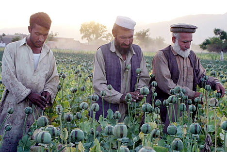
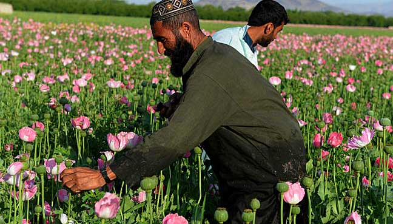
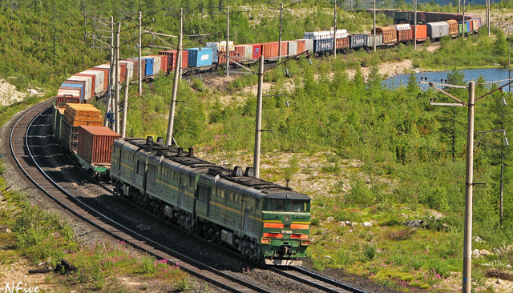
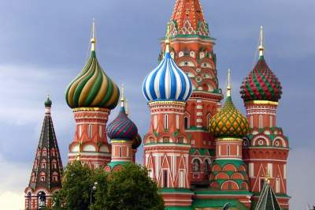
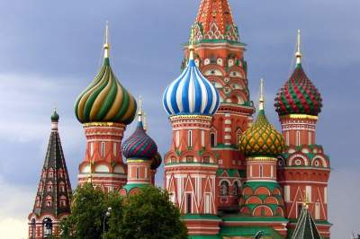
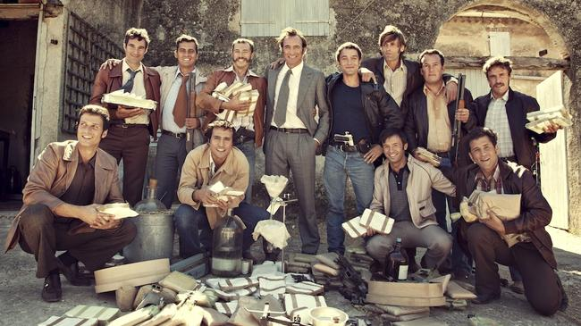
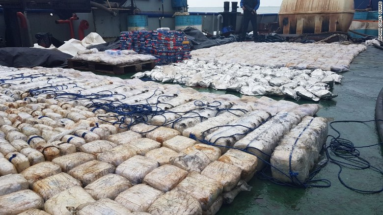
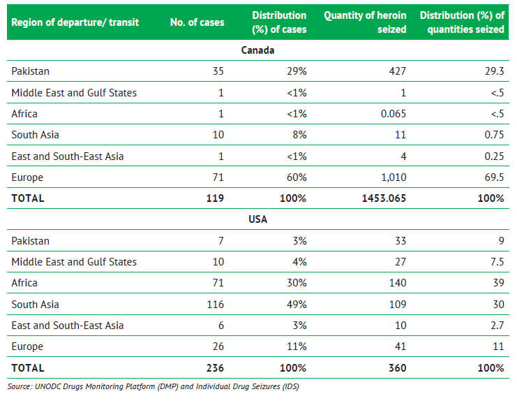

The Heroin Epidemic
Opiates have become an epidemic across our world. Millions of people are affected by this drug every year. The origin of 80% of the world's opiates originate from Afghanistan. Here we will look at how opiates travel from Afghanistan to it's destinations around the world.
Afghanistan
Afghanistan is the leading source of opiates in the world. This dangerous commodity has transformed the global economy. Opiates include Opium, Heroin and Morphine.
80% of the world's opiate supply originates from Afghanistan. It then gets smuggled across the country's thousands of miles of border into neighboring countries and smuggled in to high-profit destinations such as North America, Western Europe, or Australia. The most important heroin producing providences within Afghanistan are Helmand, Kandahar and Nangahar, highlighted on the map to the left.
Providence
>Regions of Afghanistan
Northern Route
The northern route originates from the northern region of Afghanistan. The border between Afghanistan, Turkmenistan, Uzbekistan, and Kyrgyzstan is very porous. There are border guards that patrol the border but bribes are common among the security guards. There are hundreds of mountainous borders that aren't guarded or observed at all. Once the opiates pass over the border they make their way towards Russia where the price increases significantly.
Balkans Route
The Balkans route departs from the western providences into Iran or through Pakistan and is eventually smuggled into Iran. A significant portion of the opiates get consumed in Iran but the majority continues to Turkey. The Balkan route is the main route that supplies Europe, with the highest profits coming from the Western European countries.
Southern Route
The southern route crosses into Iran or Pakistan along the southern border. These providences are the highest producing in the country and has the closest proximity to the ocean. The southern route exists primarily in air transport and maritime trade. Opiates can get smuggled onto licit trade cargo ships, or can be shipped on private boats from the remote coast of Iran or Pakistan
Northern Trade Route
Starting from the northern providences heroin and opium is transported across the border into Turkmenistan, Uzbekistan and Tajikistan. An estimated 95 tons of opiates is moved through this route every year. There is an estimated $393 million in profits that flow through this route. The amount of opium and heroin trafficked in Northern Afghanistan is about 3% of the entire nations GDP.
393 million in profit
3% of Afghanistan's GDP
75% is transported by truck

Northern Trade Route
The end destination for this route is the Russian market, where profits from the sale of heroin increase from $3000 per kilogram in Afghanistan to
$22,000 in Moscow, an increase in profit of 733%.
3,000
22,000
 733% Profit

733% Profit

Balkans Trade Route
The second route that comes out of Afghanistan is the Balkans route. This route flows from the western providences through the Islamic Republic of Iran, through Turkey and eastern Europen countries to the profitable western European nations. An estimated $28 Billion is made in profits every year, an amount which exceeds the total GDP of Afghanistan which was $21 Billion in 2014. 27% of the opiates are consumed inside of the Islamic Republic of Iran.
. 28 billion in profits
Yearly profits from other top companies:
8.27b -> Anheuser-Busch
8.38b -> Disney
 12.19b -> Microsoft
12.19b -> Microsoft

Dimitar Zhelyazkov: Balkan drug lord who was arrested in 2008 for drug and weapons smuggling. The vast majority of illicit drugs move through these regions via criminal organizations.
Balkans Trade Route
The destination countries along the Balkan route are in Western Europe. Profits from heroin in the four top countries are:
 5.1 Billion in France
5.1 Billion in France
 3.4 Billion in the UK
3.4 Billion in the UK  2.6 Billion in Germany
2.6 Billion in Germany
 1.5 Billion in Italy
1.5 Billion in Italy
64.7%of the heroin exported from Afghanistan reaches western Europe. In most countries along the route the majority of imported heroin is consumed. But in Belgium and the Netherlands 75% of the heroin that flows into the country flows out, towards further western countries.

Scene from "The Connection" a 2015 french film on a heroin smuggling ring in the mediterranean.
Southern Trade Route
Afghanistan is a land-locked country and has no access to maritime trade. The Islamic Republic of Iran and Pakistan are the two major countries along the southern route that have ports that opiates are trafficked through. Maritime transport presents an opportunity to transport large quantities of opiates quickly to other countries. Unlike the northern and Balkans trade routes which have one market destination (Russia and western Europe respectively), the maritime trade network is transported all over the world to other high-profit areas such as Asia, North America, Australia and Western Europe.  3000 lbs drug bust from Iran July 2017. Worth more than $545 million.
Southern Trade Route
Opiates flow across the borders of Iran and Pakistan and end up on the shores of the Persian Gulf and the Gulf of Oman. Here the opiates are smuggled onto boats and transported around the world. There has been Afghanistan heroin found increasingly in Asia, Western Europe and North America.
The chart below shows heroin trafficked into North America via the southern route by country of departure, 2010 - 2013.

America
America and Canada are two high-profit destinations for traffickers although there are different ways to reach them. There has been a rising epidemic of heroin usage within America over the last few years. Recently, this has been brought to the political forefront when President Trump issued a National Public Health Emergency on October 26, 2017.
Drug related deaths from 1999 - 2015
7049 - 12919
4692 - 7048
3608 - 4691
1354 - 2607
585 - 1353
190 - 584
0 - 190
Thank You
If you know someone that has lost their life to the Opiate epidemic please share your story and help bring a face to the numbers